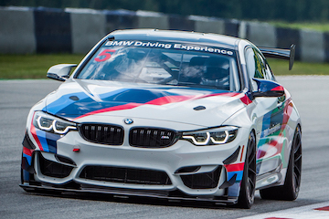
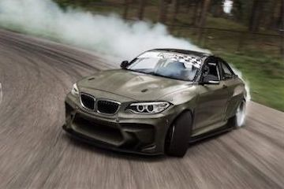
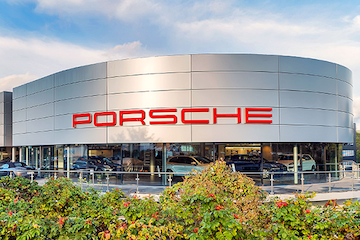
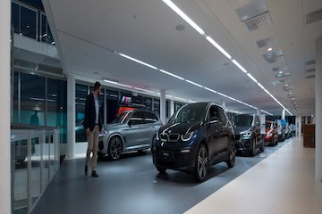
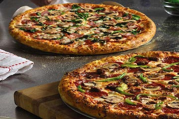
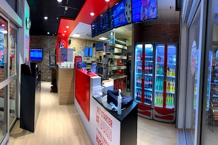

My first project
The first project of mine is the BMW on the top center. That is own build, and it is
built to drift. It is really one the most important accomplishments in my life. It
means so much that I've built it and it has made so many memories. Both me drifting alone,
and with friends. Sometimes the mess with me, because what is under the hood, but...
"The
only thing that matters is who's behind the wheel" - Toretto
A Dream Came Through
The image on the buttom left is a little part of the inside of my carshop. For not too long ago I
was just a Co-Owner, but now I fully own it myself. That is also a big goal achieved. BMW is in my heart, but
you got to make money to build more cars, and through BMW contacts I got a good offer. Actually, about 3 weeks
ago I became Co-Owner of Porche Ryen. Through this you get money, but not enough to beat Bruce.
A famous quote from Justice League:
"How did you get the house back from the bank?" - Clark Kent
"I bought the bank" - Bruce Wayne
Bought it just for fun
As the title says, I really bought it just for fun. It doesn't make to much of a profit, ups and downs.
Money wasn't the goal with buying the pizzeria. It was actually just for giveaways for fun. That also might be
the reason behind not much of a profit. All of the profit that comes from the pizzeria goes to people that can't
afford much. Not many people know that, but now everyone knows.
"It's not who I am underneath
that defines me, but what I do" - Bruce